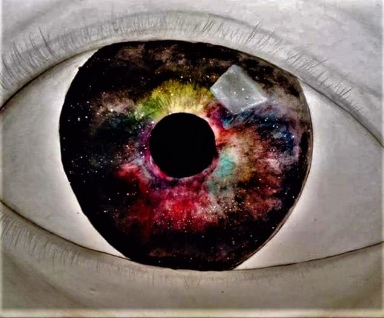

elcome to...
Enjoy!
Hello, and welcome! This, as the title states, is my first go at creating a webpage using JavaScript, HTML and CSS. I have included details and images that may help you get to know who I am a little more. Take your shoes off and have a look around.

About Me
Aside from that I like to:
- Camp
- Play video games
- Watch TV
- Movies
- TV Shows
- Documentaries
- Draw/Paint
- Create Music